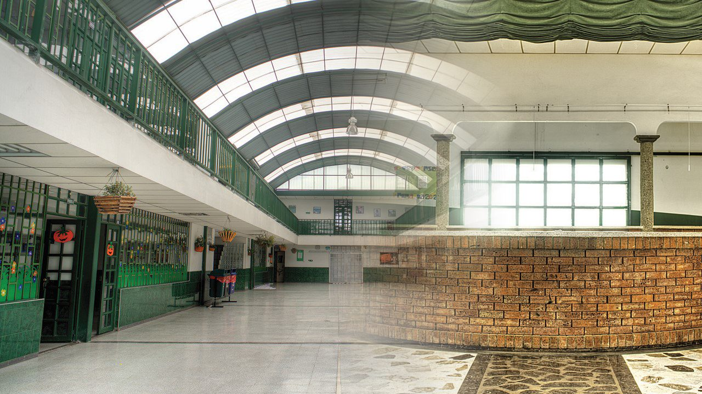
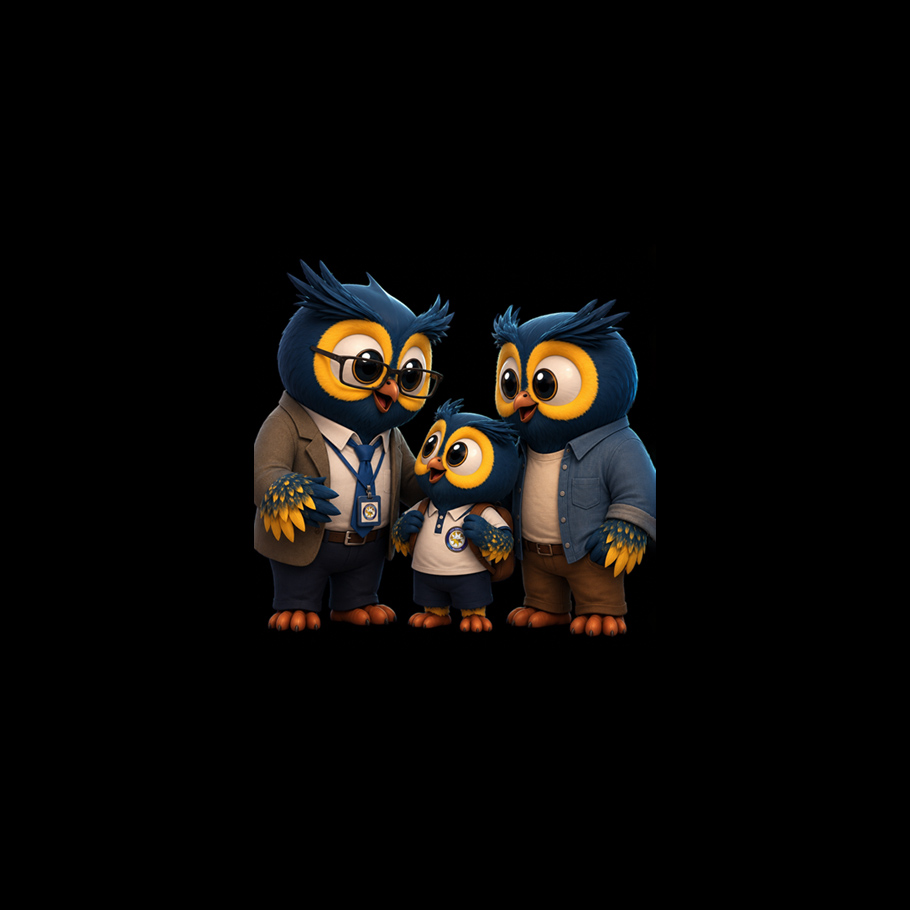
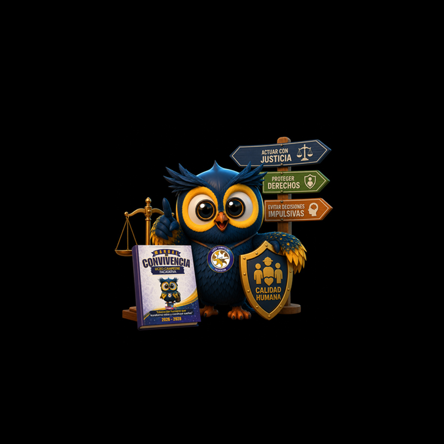
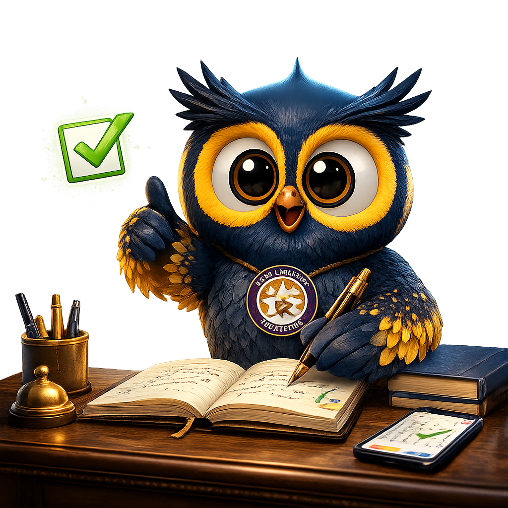
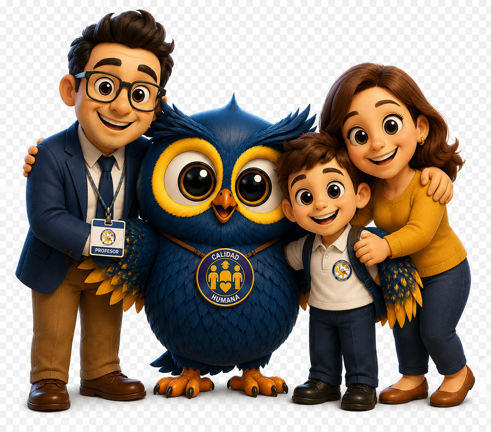

¿Qué espera usted que aprenda su hijo cuando enfrente un conflicto?
Cada decisión construye convivencia.
Familia y Liceo: una misma misión

Educar para la convivencia es una responsabilidad compartida. Cuando Familia y Liceo trabajan juntos, protegemos mejor a nuestros estudiantes.
¿Por qué existen las Rutas de Atención?

Las rutas permiten actuar con justicia, proteger derechos y evitar decisiones impulsivas.
Toca cada norma para ver qué protege.
Ley 1620 de 2013
Toca para ver qué protege.
Decreto 1965 de 2013
Toca para ver qué protege.
Ley 1098 de 2006
Toca para ver qué protege.
Pedagógico y restaurativo
- Miedo
- Silencio
- Repetición
- Dialogar
- Reparar
- Aprender
- Transformar
"Nuestro Manual de Convivencia no busca castigar personas. Busca formar personas."
Así protegemos a nuestros estudiantes
Toca cada paso para ver qué hacemos exactamente.
👆 Toca un paso de la línea para ver en qué consiste.
No todas las situaciones son iguales
Cada situación recibe una respuesta diferente.
La familia hace la diferencia
Escuchar
Informar
Acompañar
Respetar el proceso
Educar con el ejemplo
La convivencia también se construye desde casa.
¿Qué harías tú?
¿Qué actuación favorece realmente el aprendizaje?
Ahora te invito a responder algunas situaciones
No es un examen. Es una oportunidad para reflexionar sobre lo aprendido. Al final te daremos una nota que deberás registrar en el formulario de asistencia.
Confirma tu asistencia

Completa el formulario para dejar constancia de tu participación en la Escuela de Familias.
Registrar mi asistencia →Gracias por construir convivencia

Educar es una tarea compartida. Gracias por hacer parte de esta misión, familia.